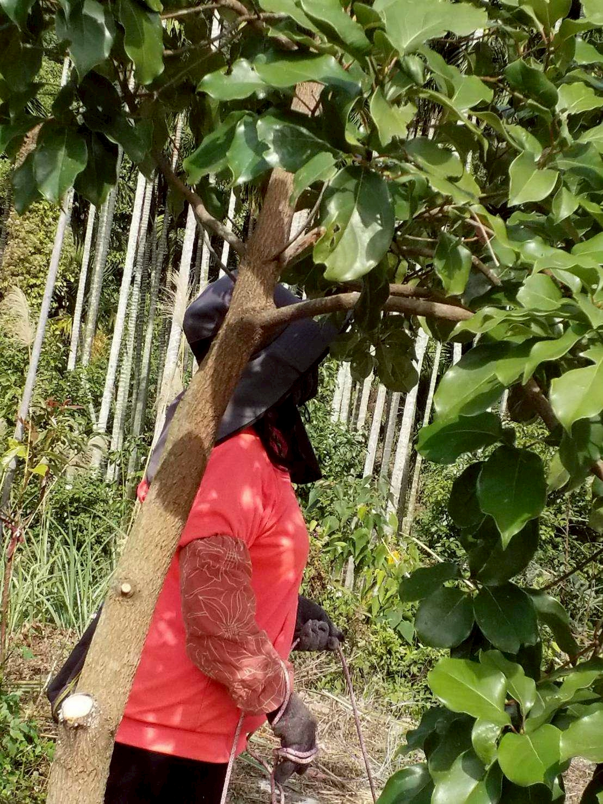
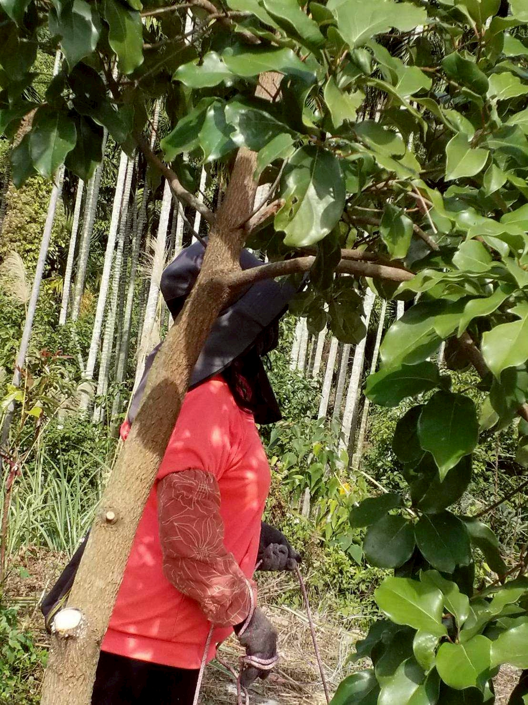

牛樟緣
山林的緣份，用一杯茶傳承
台灣自產自銷 · 牛樟葉手工茶
山林的緣份，用一杯茶傳承
台灣自產自銷 · 牛樟葉手工茶

 

阿公的那塊地，曾經種滿了檳榔。眼看土地漸漸荒廢，全家人做了一個決定——把檳榔砍掉，改種牛樟樹。
從此每個週末，大人小孩一起上山澆水、照顧樹苗。這不只是農活，更是凝聚家族的儀式。
幾年過去，當初的樹苗已長成翠綠的林子。牛樟葉加工成茶，是土地給我們的回饋，也是我們想與你分享的心意。
台灣特有的珍稀樹種，孕育了這杯山林之茶
主要分布於中低海拔山區，是台灣珍稀原生樹種
葉片富含天然揮發精油，清新怡人的山林氣息
牛樟葉採摘後以低溫慢烘，保留天然色澤與香氣